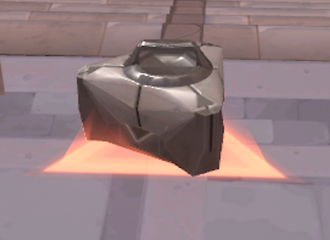
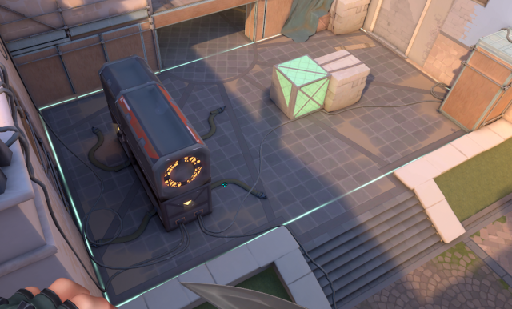

VALORANTにはさまざまな用語があり、ゲームをプレイすることや大会を観る上で重要になる。項目に分けて、分かりやすく紹介する。
VALORANTでしか使用しない用語やFPSゲームなどによく使用される用語をまとめている。
VALORANTに登場するキャラクターのこと。
敵を倒すこと。
敵に倒されること。または味方に倒されること。
敵に標準を合わせること。
銃に弾薬を補充すること。
銃を撃った際の反動のこと。
頭部を狙うこと。当たれば一撃でキルできるか、高ダメージを食らわせることができる。
試合中画面の中央にあるエイムを合わせる場所。
※拡大画像
移動キーを離すor逆のキーを押し、動きを止めること。ストッピングをしなければ、真っ直ぐ弾が飛ばない。
逆キーの例:Aキーを押していたら、Dキーを押すことで動きが止まる。Wキーを押していたら、Sキーを押すことで動きが止まる。
1回の攻撃と防衛の単位。攻撃側、防衛側どちらかのチームが勝利を収めることで次のラウンドに進む。
それぞれのエージェントが持っている特殊能力。
ポイント制でキルすることやオーブを拾うことで使用することができるようになる強力なスキル。必要なポイント数はエージェントによって異なる。
マップ上で拾うことができるアルティメットスキルが1ポイント溜まるアイテム。
攻撃側に一つ与えられる爆弾。
画像上部からエージェントの表示、その下にHPゲージ、その下にスパイク所持表示がある。
敵がいる可能性がある場所を確認すること。
画面内で位置を知らせるマーク。
ゲーム内の指揮官。プロチームではチーム内に1人いる。
特定の役割には付かず、様々な役割のエージェントを使用し、柔軟に立ち回るプレイヤーのこと。
操作するエージェントの動きや行動を制御するためのスキルのこと。
再度スキルを使用できるまでの待機時間。
攻撃側のスパイク所有者がスパイクを設置すること。
スパイクの周りに円形の白線が出てきており、防衛側のプレイヤーは白線の内側で解除しなければいけない。
水色のラインがあり、ラインの内側にスパイクを設置することができる。障害物の上などにはスパイクを設置することできない。
1ラウンド目と13ラウンド目のサイドアームの武器とスキルとシールドしか買えないラウンド。
武器やスキル、シールドを購入すること。
武器やスキル、シールドをクレジット限界まで買うこと。
1ラウンド目もしくは13ラウンド目を負けてしまい、クレジットが少ない状況で武器やスキル、シールドを購入すること。敵の意表をつくことができる。
クレジットが少なく、次のラウンドに備えて、クレジットを残し、武器やスキル、シールドを購入すること。
敵が残っているのにも関わらず、最後までスパイクの解除をすること。
スパイク設置エリアに攻め込むこと。また、最初にスパイク設置エリア内に攻め込むプレイヤーのこと。
ラウンドで最初にキルすること。
相手チームよりもクレジットの消費量が少ない状況で勝利すること。
1人しか生き残っていない状況で勝利すること。
味方が誰1人デスせずに相手を殲滅し、勝利すること。
5人がそれぞれ1キルし、勝利すること。
1ラウンドで1人が敵を5人以上キルすること。
試合中に使用される戦術についての用語をまとめている。
単独で動き、敵の情報を取ることやキルすることで、相手を混乱させ、自チームを優位に進める動き。
味方が撃ち合っている敵と同じ敵を狙うこと。
主に攻撃側で使われる用語。ラウンド開始時すぐにスパイク設置エリア内に攻め込むこと。
作戦。用意した動きを実行し、スパイク設置エリア内に攻め込むこと。
スパイクの設置や、スパイク解除に間に合わない場合、時間切れ直前など勝つことが難しい場合に戦わず、次のラウンドに武器を持ち越すこと。
スパイク設置されたエリアを取り返しに行くこと。
攻撃側の際に使用する用語。本命のサイトとは別のサイトにスキルやウルトを使い、敵を騙すこと。
複数のプレイヤーが同じ場所に固まり、攻撃または防衛すること。
攻めようとしていたサイトから違うサイトに攻めるポイント変更すること。
攻撃側の際に使う戦術。防衛側の敵が攻めてくるのを特定の場所で待ち伏せし、キルを狙う戦術。
敵の背後を取り、予想していないところから攻撃すること。
2人が異なる角度から同じ敵を攻撃する戦術。挟み撃ちの状態を作る戦術。
全ステージ・大会で付与されるポイント。世界大会のChampions(チャンピオンズ)に出場するために必要なポイント。
| 大会名 | チャンピオンシップポイント | |||||
|---|---|---|---|---|---|---|
| Kickoff(キックオフ) | 1位.3ポイント | 2位.2ポイント | 3位.1ポイント | 4位.1ポイント | ||
| Masters | 1位.5ポイント | 2位.3ポイント | 3位.2ポイント | 4位.1ポイント | ||
| stage1(ステージ1) | 1マッチ勝利で1ポイント | |||||
| stage1 playoff(ステージ1 プレイオフ) | 1位.5ポイント | 2位.3ポイント | 3位.2ポイント | 4位.1ポイント | ||
| Masters | 1位.7ポイント | 2位.5ポイント | 3位.4ポイント | 4位.3ポイント | 5位.2ポイント | 6位.2ポイント |
| stage2(ステージ2) | 1マッチ勝利で1ポイント | |||||
| stage2 playoff(ステージ2 プレイオフ) | 1位.7ポイント | 2位.5ポイント | 3位.4ポイント | 4位.3ポイント |